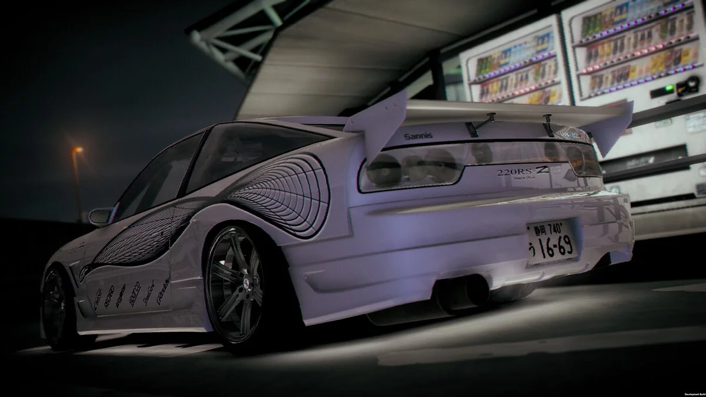

NIGHT-RUNNERS: PROLOGUE
Об игре
Краткая информация об игре и системные требования.
Ночные гонки в Японии
NIGHT-RUNNERS: PROLOGUE — гоночная игра от PLANET JEM. Действие происходит в неопределённый период между 1990 и 2009 годами и посвящено японским уличным гонкам.
Игрок участвует в заездах, зарабатывает деньги, покупает подержанные машины, обслуживает их и постепенно устанавливает новые детали.
- заезды один на один со ставками;
- покупка автомобилей на аукционе;
- гараж и обслуживание автомобиля;
- детальная настройка машины;
- фоторежим с различными эффектами.

Системные требования
| Компонент | Минимальные | Рекомендуемые |
|---|---|---|
| ОС | Windows 10 | Windows 10 |
| Процессор | Ryzen 3 1200 / Intel i5-4460 | Ryzen 5 1500X / Intel i5-8400 |
| Оперативная память | 8 GB | 16 GB |
| Видеокарта | 2 GB (AMD R9 270, NVidia GTX 750) | 8 GB (AMD RX 590, NVidia GTX 1070) |
| DIRECTX | Версия 11 | |
| Место на диске | 8 ГБ | |
| Дополнительно | Накопителя SSD | |
Источник характеристик: официальная страница игры в Steam.